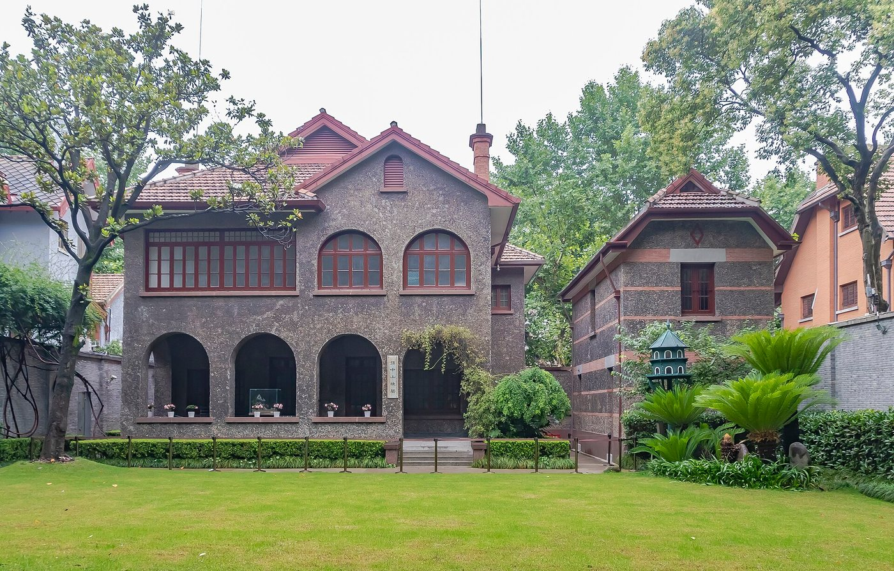
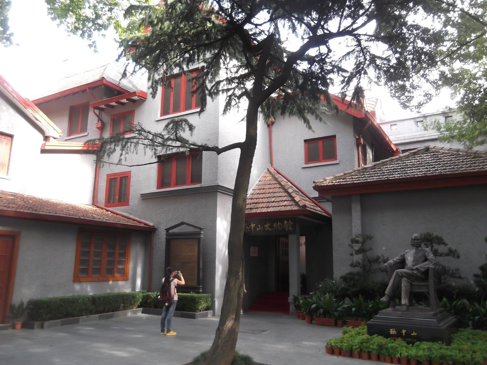
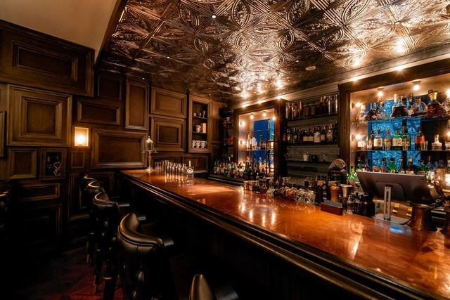

Former Residence of Sun Yat-sen, Shanghai 上海孙中山故居纪念馆
Historic house museum · Huangpu
LikelyClosed from 15 Nov · 18 Nov 2026



Sun Yat-sen lived in this small house until 1924. It has been closed since 15 Nov 2026; no reopening date.
Closed from 15 Nov
The evidence for this one has a gap. Check on the day or call ahead.
Why it matters
In 1918 four overseas Chinese in Canada bought this house for Sun Yat-sen, who had no fixed home. He lived and worked here until late 1924 and met Soviet envoy Joffe; the museum's account ties the 1923 Sun-Joffe manifesto, which opened the way to Soviet help, to this house. His widow Soong Ching-ling lived here until 1937.
What to see
A small, furnished two-storey European-style house: living and dining rooms below, study and bedroom above; about 5,000 books, maps (two drawn by Sun), a 1917 command sword; a statue of Sun outside.
How to get there
It is closed until further notice, so do not plan a visit unless a reopening notice appears: check the committee's page, or ask your hotel front desk or a Chinese-speaking friend to call first. If it reopens, show the driver: 请带我去香山路7号孙中山故居, and carry your passport.
Local tip
Fuxing Park is beside the house, and the Zhou Residence is a 5- to 10-minute walk away (check its hours first: see its card).
Watch out
A 2026-27 repair and exhibition-revamp project (CNY 12.6 m) is budgeted for the house; the museum has not said how long the closure lasts. Sun left Shanghai in late 1924 and died in Beijing on 12 March 1925. 'Manifesto drafted here' is the museum's account.
What was checked, and what was not
Read on 18 Nov 2026
Committee page read 15 Nov 2026: address, hours, Monday closure. City News Service (9 May 2026) lists it as walk-in, CNY 20. Committee news of 11 Nov 2026 shows the institution active, not that the house is open. The museum's closure notice of 12 Nov 2026 (reported by Tencent News on 16 Nov) and its partial-opening notice of 28 Jun 2026 (Shanghai Observer) were read 18 Nov 2026.
Not checked
When the museum reopens (no date announced); any passport rule (none stated). Walking time is a map estimate, not re-measured.
Sources
- Sun-Soong managing committee (residence page)sswgw.org.cn Opens in a new tab
- City News Service (9 May 2026)citynewsservice.cn Opens in a new tab
- Tencent News (16 Nov 2026): museum closure from 15 Nov, notice of 12 Novnews.qq.com Opens in a new tab
- Shanghai government 2026 project table (PDF, repair project)shanghai.gov.cn Opens in a new tab
Nearby

Bar Leone Shanghai
Checked

Speak Low 彼楼
Checked